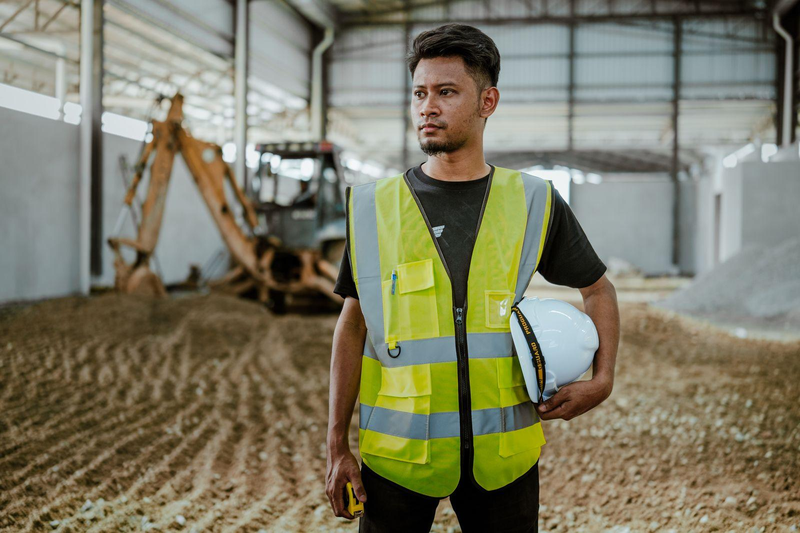
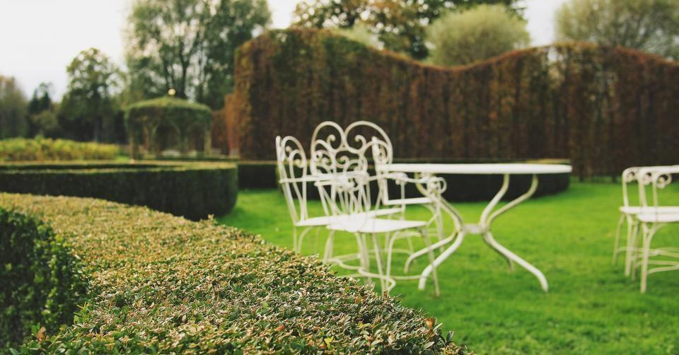
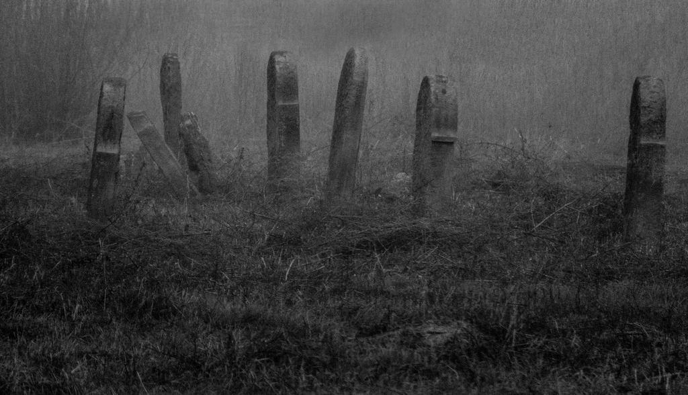
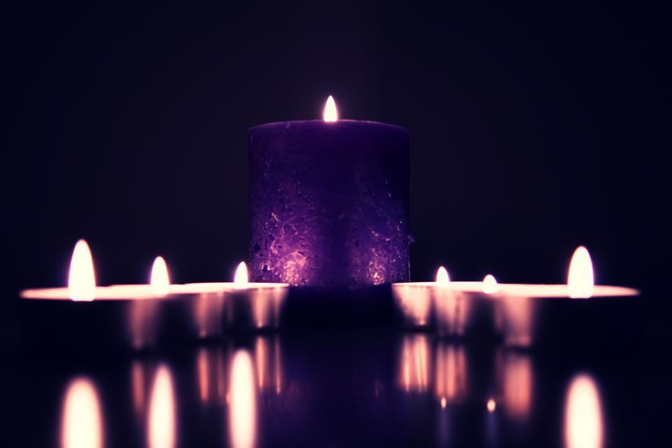
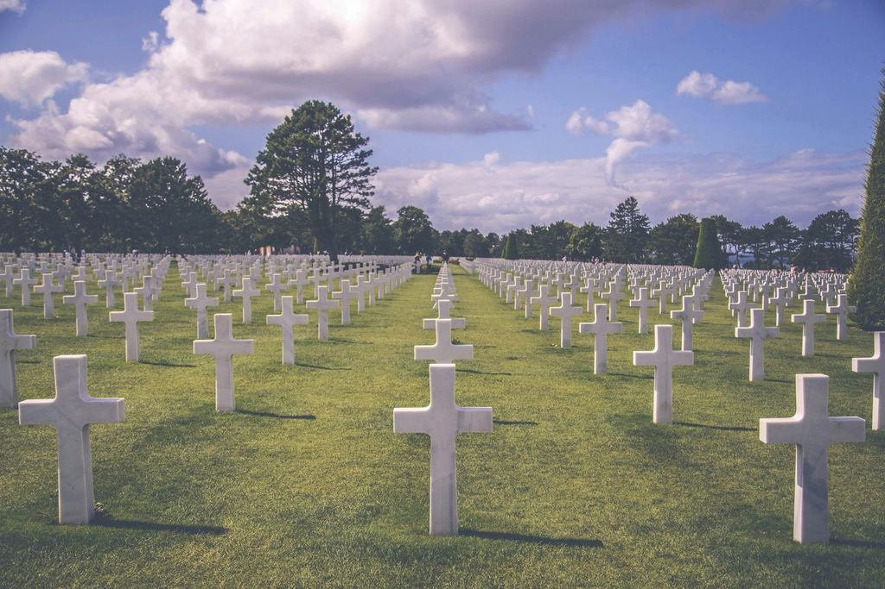
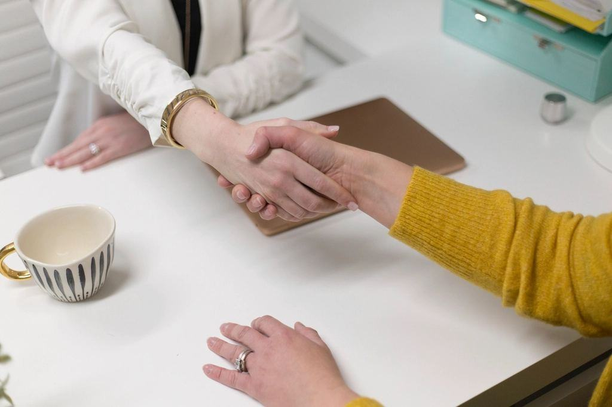
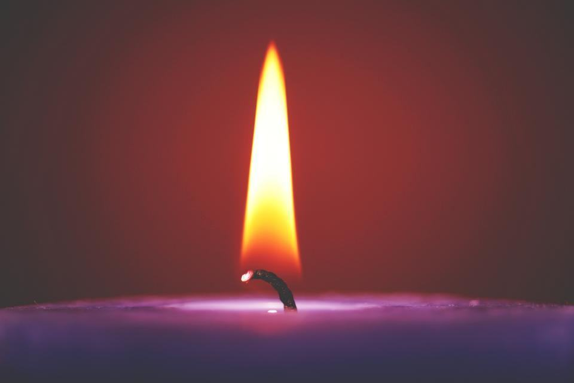
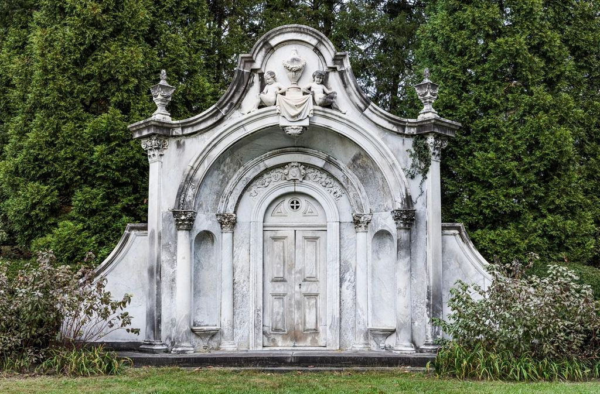

”På hospicet frågade nästan alla till slut samma sak: kommer de att klara sig? Det enklaste sättet att hjälpa dem man lämnar är att berätta hur man vill ha det.”
Det säger de vi har mött
”Mamma gjorde ett planeringssamtal med Maria två år innan hon dog. När dagen kom fanns allt nedskrivet, ända ner till vilken psalm hon inte ville ha.”
Lars-Göran P. · Sävja”Sorgegruppen räddade mitt första år som änkling. Vi är fem som fortfarande äter middag ihop varje månad.”
Amanda F. · Knivsta”Hanna skrev en ceremoni som fick alla att skratta och gråta i samma andetag. Precis som pappa.”
Samtal, ceremonier och grupper
- Genomfört

Planering med en hospicepatient
Tre samtal på hospicet under hennes sista månad – musiken och dikten valde hon själv.
- Genomfört

Borgerlig ceremoni i Botaniska trädgården
En botanist fick sitt avsked i orangeriet, med de växter han själv tagit hem från Kamerun.
- Genomfört

Begravning i Gamla Uppsala kyrka
Ceremonin hade skrivits fyra år tidigare i ett planeringssamtal – familjen behövde bara följa den.
- Genomfört

Stöd till en högstadieklass
Tre besök i klassen efter att en elev omkommit i en trafikolycka.
- Genomfört

Sorgegrupp för föräldrar
Sex föräldrar som träffas fortfarande, ett år efter att gruppen avslutades.
- Anmälan öppen

Sorgegrupp för unga vuxna
Åtta kvällar från januari – fyra platser kvar.
Samtal, begravning och grupp
Planeringssamtal
För dig som vill skriva ned dina önskemål.
900 kr90 minuter- Samtal hos oss, hemma eller på video
- Skriftlig sammanställning
- Förvaring i Vita arkivet
- Avdrag om vi ordnar begravningen
- Populärast
Begravning med samtal
Begravning där ceremonin skrivs tillsammans med er.
fr. 31 900 krkyrklig eller borgerlig- Två längre möten med familjen
- Kista, svepning och transport
- Ceremonibukett och tryckt program
- Uppföljande samtal efter en månad
Sorgegrupp
Kostnadsfri för familjer som haft begravningen hos oss.
2 400 kråtta kvällar- Sex till åtta deltagare
- Leds av legitimerad terapeut
- Te, kaffe och smörgås varje kväll
- Material att ta med hem
Moms ingår. Sorgegruppen är gratis för familjer som haft begravningen hos oss.

Ett första samtal, utan krav
Många som ringer oss vet inte riktigt vad de vill. Det är helt i sin ordning. Ett första telefonsamtal på 20 minuter kostar ingenting och förpliktar till ingenting.
Vi har aldrig mer än tre möten om dagen per rådgivare, så att ingen familj behöver känna att klockan går.
Legitimerade och auktoriserade
- Auktoriserad av SBFAuktoriserad av Sveriges Begravningsbyråers Förbund sedan 2020.
- Legitimerad terapeutSorgegrupperna leds av Karin Åberg, legitimerad psykoterapeut.
- Legitimerad sjuksköterskaMaria Ekdahl har specialistutbildning i palliativ vård.
- KonsumentskyddVåra avtal följer bestämmelserna för begravningstjänster som tagits fram med Konsumentverket.
Sorgen slutar inte vid graven
Därför ringer vi alltid upp en månad efter begravningen, och därför har vi en egen samtalsterapeut. Allt stöd efteråt är kostnadsfritt för familjer som haft sin begravning hos oss.
- 1 månefter begravningen ringer vi upp
- 0 krför uppföljande samtal
- 8kvällar i varje sorgegrupp

Fem personer, tre kompetenser

Samtal i livets slutskede
Maria håller de flesta planeringssamtalen och kommer gärna till hospice eller hem.
Läs mer
Begravningar från början till slut
Elin och Daniel ordnar alla praktiska delar, från kista och tider till annons och minnesstund.
Läs merSorg, ceremoni och ord
Karin leder sorgegrupperna och Hanna skriver och leder de borgerliga ceremonierna.
Läs merVi börjar alltid med att lyssna
- 1
Ett första samtal
Ring eller skriv. Vi lyssnar på var ni befinner er – om någon är sjuk, nyss har dött eller om du vill planera för dig själv.
- 2

Tid att prata
Vi träffas i gårdshuset, hemma eller på hospicet. Mötet får ta den tid det tar.
- 3

Ceremonin
Den som har skrivits tillsammans med er, med ord och musik som betyder något.
- 4
Efteråt
Ett samtal efter en månad, och plats i en sorgegrupp om ni vill.